Min. 1st Qu. Median Mean 3rd Qu. Max.
43.79 75.20 86.29 92.05 104.15 188.50 [1] 24.24982[1] 28.95Bhargavi, Maimoona, Thu
We chose to explore the Breast Cancer Wisconsin (Diagnostic) dataset. The data set has information on the characteristics of various breast masses. The features are calculated from the digitized image of a fine needle aspirate (FNA) of the breast mass. A consecutive series of 569 tumors (212 malignant, 357 benign) provided the data to develop (train) the algorithm. We think the source of our data is reliable as the data was obtained from the University of Wisconsin Hospitals, Madison from Dr. William H. Wolberg.
The data set has 568 rows and 32 columns. Each row corresponds to a breast mass, while each column refers to a characteristic feature. We are interested in five variables. Four of these are quantitative:\ - perimeter_mean: the mean size of the core tumor (mm)\ - texture_mean: the mean standard deviation of gray-scale values (pixel)\ - smoothness_mean: the local variation in radius lengths (mm)\ - concavity_mean: the mean of severity of concave portions of the contour (mm)\
The remaining variable is categorical: Diagnosis (M = malignant, B = benign).
Cross-validation is a class of methods that estimate the test error by rate by holding out a subset of the training observations from the fitting process, and then applying the statistical learning method to those held out observations.
\[\text{CV}_{(k)} = \frac{1}{k} \sum_{j=1}^k \text{MAE}_j\]
The goal of cross-validation is to test the model’s ability to predict new data that was not used in estimating it, in order to flag problems like overfitting or selection bias and to give insight into how the model will generalize to an independent data set. Overfitting occurs when a model reads too much into chance features and essentially memorizes features of the data used to build it, thus reducing reliability and the ability to generalize to underrepresented populations. Cross-validation helps prevent this by providing a more reliable estimate of how well a model would generalize to unseen data.
We utilized a linear regression model to build and evaluate a predictive model of breast mass perimeter by concavity.
We incorporated 1 predictor, 2 predictors, and then 10 predictors to our model of breast mass perimeter:
\[\mathbb{E}(perimeter\_mean| concavity\_mean) = β_0+ β_1(concavity\_mean)\] \[\mathbb{E}(perimeter\_mean| concavity\_mean) = β_0+ β_1(concavity\_mean) + β_2(concavity\_mean)^2\]
\[\begin{align*} \mathbb{E}(perimeter\_mean| concavity\_mean) = \beta_0+ \beta_1(concavity\_mean) + \beta_2(concavity\_mean)^2 + ... +\\ \beta_{10}(concavity\_mean)^{10} \end{align*}\]
The visualizations in Figures 10, 11, and 12 demonstrate that the more predictors are added, the more the models become overfit to the noise in our data. The model then loses its ability to generalize to new data.
We have trained and tested our data by creating an 80-20 train-test split. This ensures that there is a substantial amount of training data in order to evaluate a decently sized testing set.
We are implementing 10-fold, 8-fold, 5-fold and Leave One Out Cross-Validation. Each “held-out” fold is our test set. We are using Mean Absolute Error (MAE) as our error metric:
\[ \text{MAE} = \frac{1}{n} \sum_{i=1}^{n} \left| y_i - \hat{y}_i \right|\]
We are implementing cross-validation techniques to the following 2 models:
\[\begin{align*} \mathbb{E}(perimeter\_mean | texture\_mean, concavity\_mean, smoothness\_mean) = \\ \beta_0+ \beta_1 (texture\_mean) +\beta_2(concavity\_mean) + \beta_3(smoothness\_mean) \end{align*}\]
\[\mathbb{E}(perimeter\_mean| texture\_mean, concavity\_mean) = \beta_0+ \beta_1 (texture\_mean) + \beta_2(concavity\_mean)\]
Logistics regression is modeling method that allows us to adjust the linear regression model to account for binary categorical response variables by mapping probabilities between 0 and 1 to the real number range via ideas of logs and odds.
The formula for a sample logistics regression model with \(n\) predictors is
\[ log(odds(Y | X_1, X_2, ..., X_n)) = \beta_0 + \beta_1X_1 + \beta_2X_2 + ... + \beta_nX_n, \]
where Y represents the response variable with a binary outcome, and each \(X_i\) represents a quantitative explanatory variable.
In the context of our 4 variables of interest, our model evaluates to
\[ log(odds(Diagnosis | X_1, X_2, X_3, X_4) = \beta_0 + \beta_1X_1 + \beta_2X_2 + \beta_3X_3, \beta_4X_4 \]
where
Because we are applying transformations on top of a regular linear regression model, there are adjustments to how we interpret the coefficients. Since this process is similar across all explanatory variables, we will only mathematically derive the interpretation for one of them for brevity.
Let fix the value of a tumor’s \(X_1, X_2, X_3, X_4\) be some constants \(a, b,c, d\) respectively, then our model is as follows:
\[(eq1): log(odds(Diagnosis| X_1 = a, X_2 = b, X_3 = c, X_4 = d)) = \] \[\beta_0 + \beta_1a + \beta_2b + \beta_3c + \beta_4d \]
If we increase the value of \(X_1\) by 1, but keep all the other values the same, we would have equation 2 like so:
\[(eq2): log(odds(Diagnosis| X_1 = a+1, X_2 = b, X_3 = c, X_4 = d)) = \] \[\beta_0 + \beta_1(a+1) + \beta_2b + \beta_3c + \beta_4d \]
If we subtract eq1 from eq2, we would have \[log(odds(Diagnosis| X_1 = a+1, X_2 = b, X_3 = c, X_4 = d)) - \] \[log(odds(Diagnosis| X_1 = a, X_2 = b, X_3 = c, X_4 = d)) = \]
\[(\beta_0 + \beta_1(a+1) + \beta_2b + \beta_3c + \beta_4d) - (\beta_0 + \beta_1a + \beta_2b + \beta_3c + \beta_4d) \]
This is equivalent to saying
\(log \left( \frac{\operatorname{odds}(\text{Diagnosis} \mid X_1 = a+1, X_2 = b, X_3 = c, X_4 = d)}{\operatorname{odds}(\text{Diagnosis} \mid X_1 = a, X_2 = b, X_3 = c, X_4 = d)} \right) = \beta_1\)
Exponentiating both sides gives:
\[ \frac{odds(Diagnosis| X_1 = a+1, X_2 = b, X_3 = c, X_4 = d)}{odds(Diagnosis| X_1 = a, X_2 = b, X_3 = c, X_4 = d)}= e^{\beta_1} \] We can rearrange this to:
\[ odds(Diagnosis| X_1 = a+1, X_2 = b, X_3 = c, X_4 = d)\] \[= e^{\beta_1}odds(Diagnosis| X_1 = a, X_2 = b, X_3 = c, X_4 = d) \]
We can interpret the above as for every 1 mm increase in the mean perimeter of the tumor ,the odds of it being malignant increases by a multiplicative factor of \(e^{\beta_1}\) after adjusting for the mean texture, smoothness, and concavity.
We will apply this line of thinking to a section later on as we discuss the results of our model
K-means is an unsupervised learning algorithm that partitions the data into \(k\) clusters. In unsupervised learning, we have a set of random variables \(X_1, \ldots, X_p\), each with \(n\) observed values. But, there is no response variable \(Y\).
In K-means, we choose an integer \(K\), which is the number of clusters, beforehand as a tuning parameter. Let \(C_1, \ldots, C_K\) denote sets containing the indices of observations in each cluster.
The cluster sets must satisfy:
K-means seeks to minimize the total within-cluster variation:
\[\min_{C_1,\ldots,C_K} \sum_{k=1}^{K} W(C_k)\]
where \(W(C_k)\) is the within-cluster variation for cluster \(C_k\), commonly defined using Euclidean distance:
\[W(C_k) = \frac{1}{|C_k|} \sum_{i,j \in C_k} \sum_{p=1}^{P} (x_{ip} - x_{jp})^2\] where \(X_{ij}\) denotes the \(i\)th observation of predictor \(X_j\).
The algorithm aims to find cluster assignments that make observations within each cluster as similar as possible (minimizing within-cluster variation). Each cluster is represented by its centroid (mean of all points in the cluster), and observations are assigned to the nearest centroid.
In our breast cancer example, we’re clustering based on tumor characteristics (like radius_mean and texture_mean) to identify natural groupings that may correspond to malignant vs. benign tumors. We chose to have k=2 clusters as we are interested in differentiating between benign and malignant. The silhouette analysis in Figure 5 shows us that k=2 is the most optimal choice both, mathematically as well as for this given research question
We used the MSE as our measure of error as one of the main goals in K-means is to minimize the within cluster variation which is equivalent to the mean standard error (when using Euclidean distance).
The table below displays evaluation metrics of cross-validation for our two models. As mentioned earlier, we used MAE as our error metric because it provides a fair and interpretable measure of error without disproportionately punishing large outliers, which makes it suitable for medical datasets such as this one, for breast cancer tumors.
| Model | In-sample MAE | 10-fold CV MAE | LOOCV MAE | 5-fold CV MAE | 8-fold CV MAE |
|---|---|---|---|---|---|
| 1 | 11.8729 | 11.9542812 | 11.95863 | 11.9937511 | 11.9305124 |
| 2 | 12.65028 | 12.7211409 | 12.73318 | 12.7598652 | 12.7120443 |
For Model 1, it looks like the MAE is roughly similar for when it’s measured in-sample (11.873) versus when it’s tested on “new” data (each test fold held out). Model 2 also has roughly similar MAE for in-sample (12.605) versus CV data. It seems better to pick the first model.
The CV errors seem to be fairly consistent between 10-fold, 5-fold, 8-fold and LOOCV. Although a slim difference, the 8-fold cross-validation measure provides the smallest CV error for both models.
According to our model (Figure 13), all of our variables have a positive correlation to the response variable, meaning the greater the value, the higher the chances that a tumor is malignant.
Specifically, we have found that the odds of a tumor with a mean perimeter, mean standard deviation of gray-scale value of texture, mean variation in radius length, and mean severity of concave portions of the contour of the tumor of 0 is \(e^{\beta_0} = 8.244728*10^{-17}\), which is comparatively low.
For every 1 mm increase in the mean perimeter of the tumor, the odds of it being malignant increases by a multiplicative factor of \(e^{\beta_1} = 1.207159\) after adjusting for the mean texture, smoothness, and concativity.
For every 1 pixel increase in the mean standard deviation of gray-scale values of texture of the tumor ,the odds of it being malignant increases by a multiplicative factor of \(e^{\beta_2} = 1.444111\) after adjusting for mean perimeter, smoothness and concavity.
For every 1 mm increase in the mean local variation in radius lengths of the tumor ,the odds of it being malignant increases by a multiplicative factor of a staggering \(e^{\beta_3} = 1.438568e*10^{46}\) after adjusting for mean perimeter, texture, and concavity.
For every 1 mm increase in the mean of severity of concave portions of the contour of the tumor ,the odds of it being malignant increases by a multiplicative factor of a whooping \(e^{\beta_4} = 6.329209 *10^7\) after adjusting for mean perimeter, texture, and smoothness.
In figure 8, the B cluster represents tumors with smaller mean radius and lower mean texture values. Therefore these are characteristics associated with breast mass tumors that are Benign. The M cluster represents tumors with larger mean radius and higher mean texture values. Therefore these are characteristics associated with breast mass tumors that are Malignant. The clustering we observed in figure 7 generally matches the clustering in figure 8 done via K-means on just texture_mean and radius_mean which had no info about whether tumours were benign or malignant.
Min. 1st Qu. Median Mean 3rd Qu. Max.
43.79 75.20 86.29 92.05 104.15 188.50 [1] 24.24982[1] 28.95# A tibble: 2 × 2
diagnosis n
<chr> <int>
1 B 356
2 M 212# A tibble: 2 × 2
diagnosis n
<chr> <int>
1 B 356
2 M 212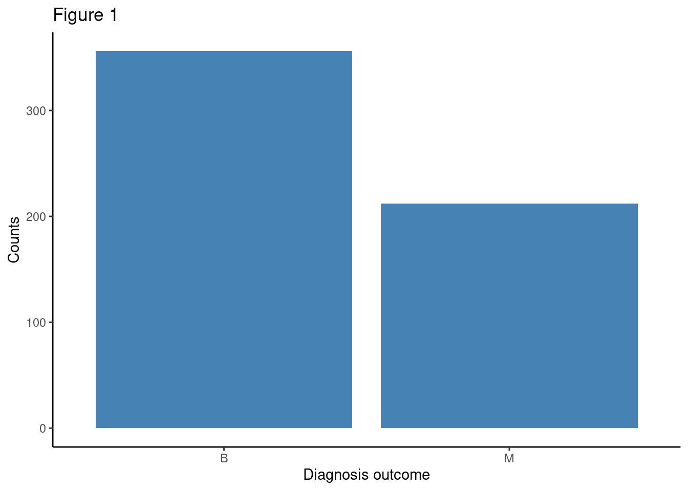
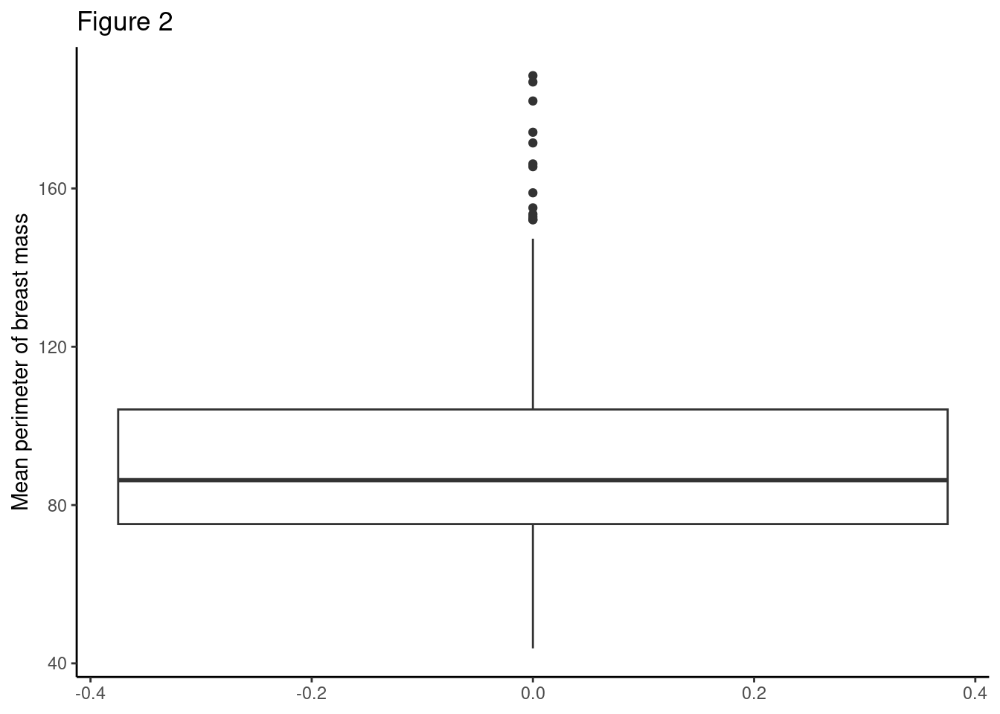
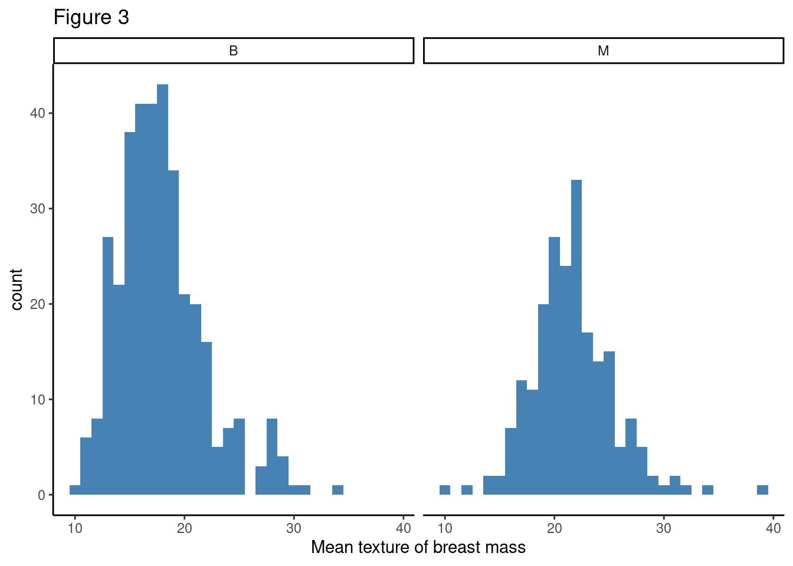
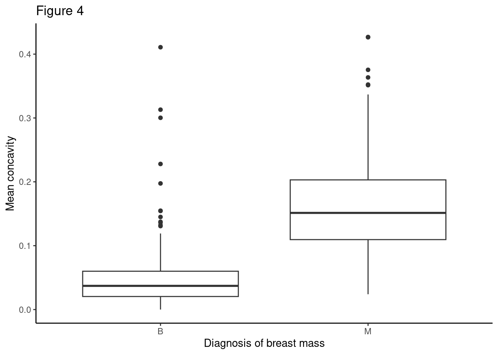
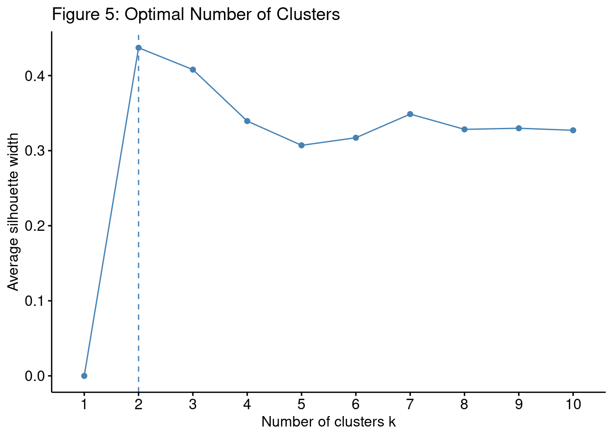
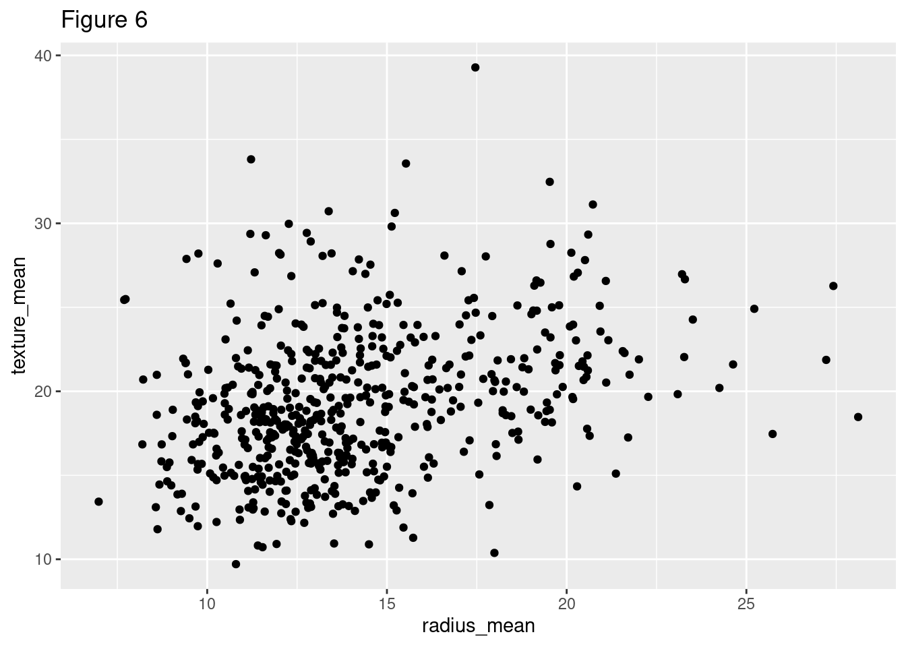
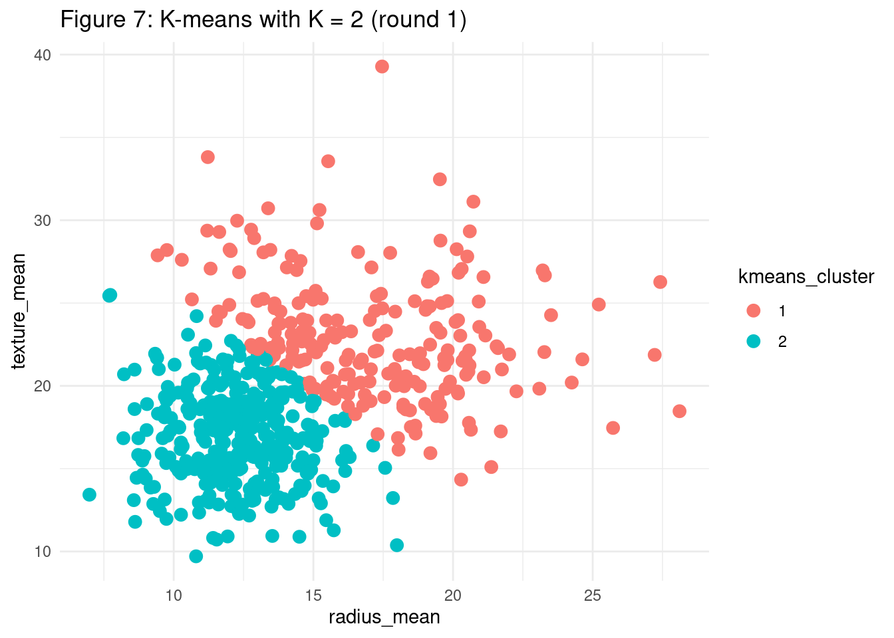
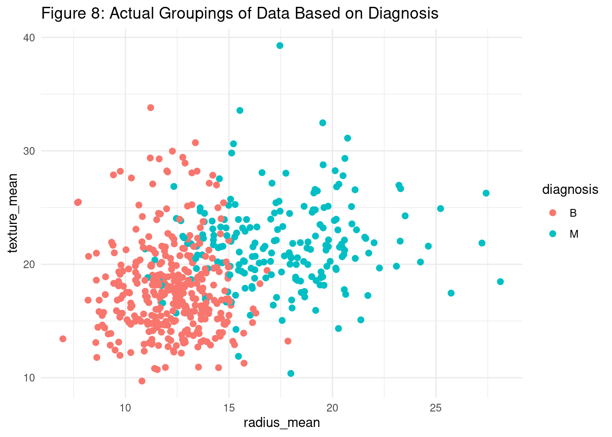
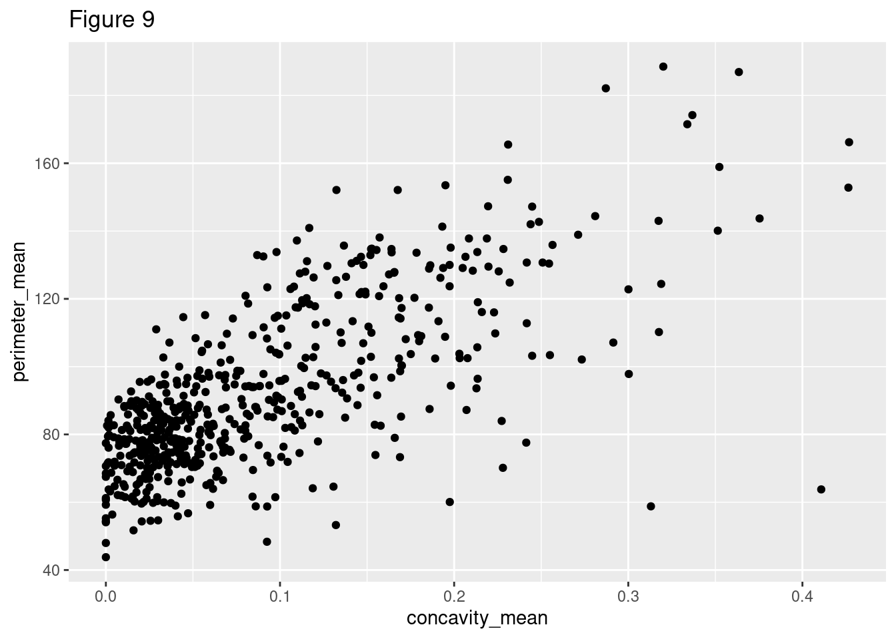
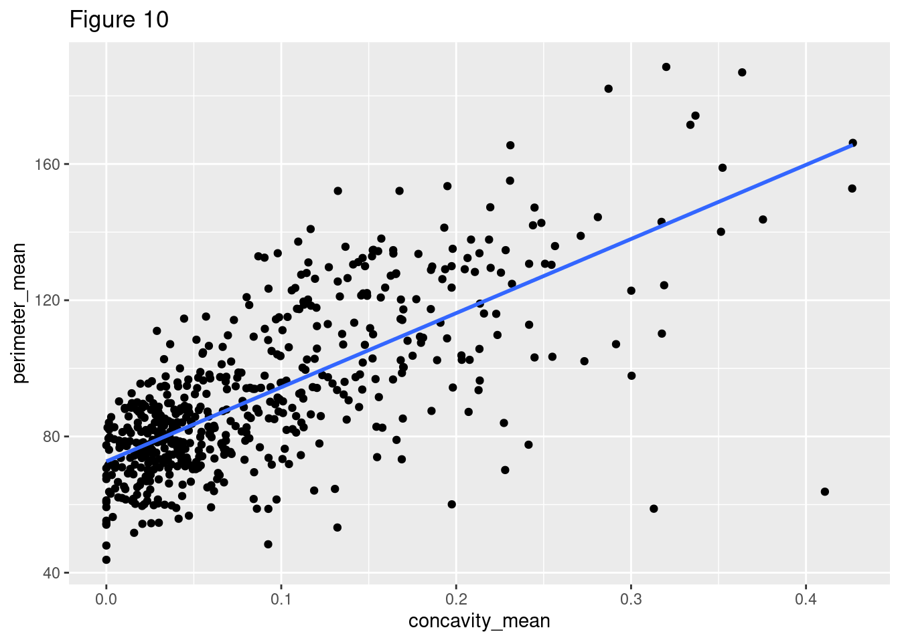
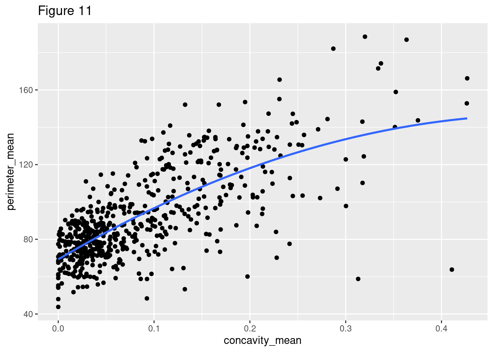
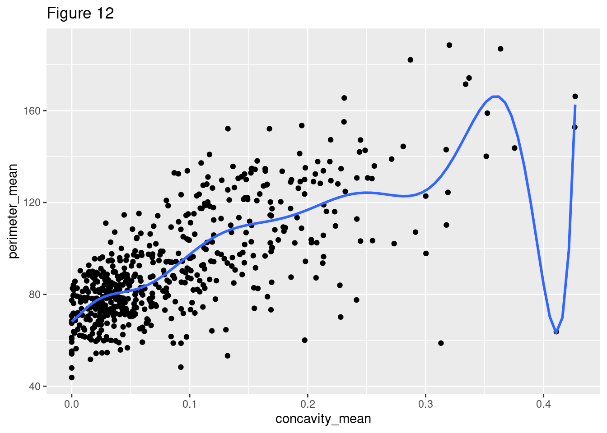
Figure 13:
Call: glm(formula = diagnosis ~ perimeter_mean + texture_mean + smoothness_mean +
concavity_mean, family = binomial)
Coefficients:
(Intercept) perimeter_mean texture_mean smoothness_mean
-37.0344 0.1883 0.3675 106.2825
concavity_mean
17.9633
Degrees of Freedom: 567 Total (i.e. Null); 563 Residual
Null Deviance: 750.5
Residual Deviance: 164.2 AIC: 174.2